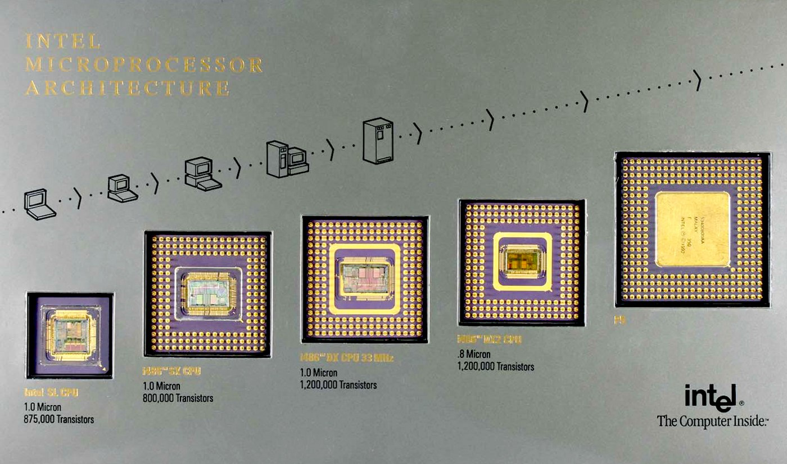
В конце технического интервью, если кандидат ответил на вопросы и справился с задачами, у нас есть время для свободных вопросов, которые можно задать команде или кому-то из интервьюеров. Эту практику я переносил из компании в компанию, и она всегда помогала разрядить обстановку или вывести человека на разговор, если он был напряжён во время общения. Вопросы могут быть любые, кроме личных или тех, что под NDA. Обычно кандидаты задают технические вопросы по стеку, пайплайнам, иногда пытаются задать каверзные вопросы, особенно по плюсам, чтобы проверить нас. Иногда и мы не можем ответить на все из них. Вопросы в стиле Google — например, «почему таблетки круглые?» — тоже встречаются, но недавно на одном из интервью прозвучал вопрос, на который вроде все и знали ответ, но никто сразу не смог его дать. Вопрос звучал так: «Какие общие технологии и решения появились в процессорах с времён 486, которыми мы часто пользуемся?»
Вопрос действительно интересный — что нового появилось, чем мы пользуемся каждый день? Что умеют современные процессоры, чего не могли процессоры год или два назад, пять или десять лет назад, сорок лет назад? Мы просто используем миллиарды транзисторов, даже не зная, как они работают. Покопавшись в Википедии, на сайте Агнера Фога и в документации Intel, я составил список того, что появилось и используется в современных процессорах. Всё, что указано ниже, относится в основном к x86 и консолям, если не указано иное. Поскольку консоли после третьего поколения PlayStation — фактически ПК с минимальными отличиями, речь дальше пойдёт в основном о ПК. История имеет склонность повторяться, и многое из того, что мы сейчас имеем, вводилось не один раз, просто под разными названиями.
Разное
Для начала, современные процессоры имеют более широкие регистры и могут адресовать больше памяти. В 80-х годах использовались 8-битные процессоры, но сейчас почти наверняка все ПК и консоли работают на базе 64-битного процессора. Не буду подробно останавливаться на этом, предполагая, что хабражитель как минимум знаком с программированием или смежной тематикой.
Другие решения, которые мы используем в повседневной жизни, но которые были введены в x86 ещё с начала 80-х, это страничная организация и виртуальная память, конвейеры вычислений и поддержка операций с плавающей точкой через сопроцессоры.
Кэши
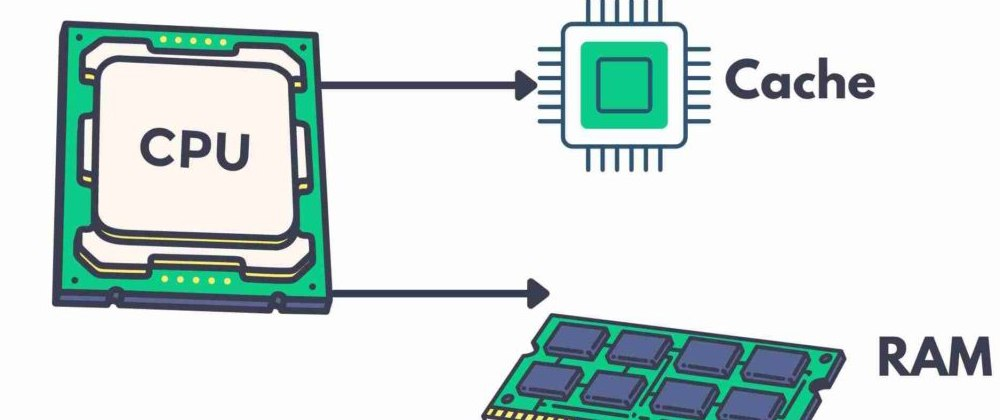
Одним из наиболее значимых технических решений для повседневного программирования стало появление кэшей в процессорах. Например, на 286 доступ к памяти занимал всего несколько тактов, а вот на Pentium 3/4 доступ к памяти требовал уже более 400 тактов. Несмотря на то, что процессоры стали значительно быстрее, память не развивалась так же быстро.
Решением проблемы медленной памяти стали кэши и предвыборка данных большими блоками из оперативной памяти. Кэширование позволяет быстро получить доступ к часто используемым данным, а предвыборка загружает данные в кэш, если модель доступа предсказуема.
Несколько тактов против 400+ тактов выглядят пугающе, фактически это просадка более чем в 100 раз. Но, если написать простейший цикл, обрабатывающий большой блок данных, процессор будет предвыбирать нужные данные заранее, позволяя обрабатывать данные на скорости около 22 ГБ/с на моём 3-ГГц Intel. При обработке двух данных за такт при частоте ~3 ГГц в теории можно получить 24 ГБ/с, так что 22 ГБ/с — это неплохой результат. Мы теряем около 5% производительности при загрузке данных из основной памяти, а не на порядки больше.
И это ещё не всё: при известных паттернах доступа, например, при работе с массивами и блоками данных, которые хорошо помещаются в кэше процессора и легко детектируются блоком предсказания, можно получить близкую к максимальной скорость обработки. Здесь стоит упомянуть известную статью Ульриха Дреппера «Что каждый программист должен знать про память» (перевод).
TLB (Translation Lookaside Buffer)
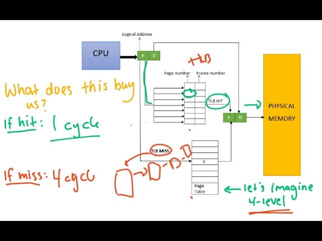
Сколько у ядра кэшей? 1-2-3-5? У ядра есть множество различных кэшей для разных задач, и кэши для основной памяти здесь далеко не самые быстрые. Например, есть кэш декодированных инструкций, и вы вряд ли когда-то будете задумываться о его существовании, если только не занимаетесь микрооптимизацией, когда все остальные способы уже были испробованы.
Есть TLB-кэш, который используется для поиска адресов виртуальной памяти. Он расположен отдельно, потому что, даже если данные находятся в кэше L1, поиск любого адреса будет занимать несколько тактов. Поэтому и существует кэш для поиска по виртуальным адресам, обычно имеющий очень ограниченный размер — десятки, максимум сотни записей. Однако поиск по нему занимает один такт или даже меньше благодаря использованию отдельного блока управления.
Спекулятивное выполнение
Спекулятивное выполнение стало возможным благодаря конвейерным реализациям и наличию блока предсказания переходов в процессорах, что привело к снижению стоимости условного перехода. Применяя данные от BPU, можно начать выполнение ветвления на основе истории до того, как будет известно значение перехода, то есть заранее перед условным переходом. Сначала BPU определяет, какой из вариантов перехода наиболее вероятен, и проц загружает следующий набор инструкций, связанных с этим переходом. Если предсказание оказалось верным, инструкции уже готовы, и не будет никакой задержки выполнения. Если предсказание было неверным, проц загружает необходимые данные и переходит к этим инструкциям. Однако точность предсказателей переходов обычно превышает 95%, поэтому необходимость перезагрузки данных возникает редко. Спекулятивное выполнение появилось на процессорах Intel с Pentium Pro и Pentium II, и на AMD с линейки K5.
Параллельные вычисления
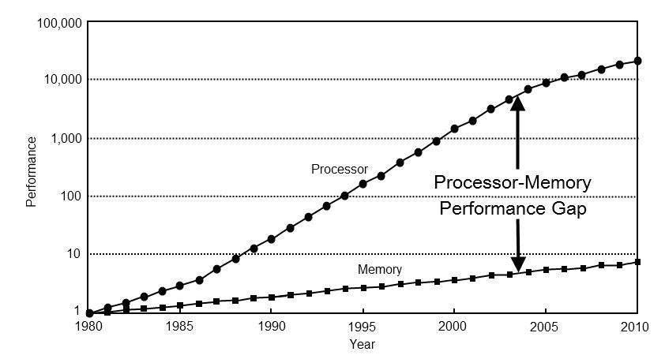
Ещё одной важной инновацией, которая изменила подход к разработке и производительности ПО, стала поддержка многозадачности и параллельных вычислений на уровне железа. Когда-то многозадачность в x86 выполнялась только на уровне операционной системы, но с появлением процессоров Intel с поддержкой технологии Hyper-Threading (HT) появилась возможность выполнять два «потока» на одном физическом ядре.
Благодаря HT и, позднее, многим физическим ядрам в процессоре, мы смогли выполнять несколько программ или частей программы физически параллельно, снижая время ожидания. Например, в играх это используется для разделения логики, обработки звука, физики и рендеринга, где каждое ядро или поток может быть занят своей задачей. Современные процессоры, особенно в консолях, могут содержать несколько специализированных ядер, что позволяет эффективно распределять нагрузки между потоками.
В третьей плойке установлен центральный процессор Cell BE (Broadband Engine). Этот процессор является совместной разработкой инженеров компаний Sony, Toshiba и IBM. В процессоре установлено 8 ядер. Рабочими являются только семь ядер, восьмое — дополнительное и предназначено для улучшения производительности путём распределения мощности между остальными ядрами. Если одно из восьми ядер получит дефект при производстве, то оно может быть отключено без необходимости объявления дефектности всего процессора. Тактовая частота ядра 3,2 ГГц.
Некэшируемые области памяти
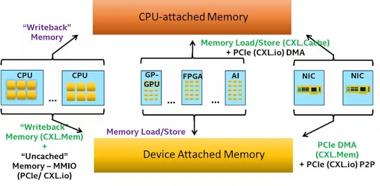
Процессор не может работать напрямую с оперативной памятью: сначала данные попадают в кэш, забираются оттуда в регистры и обрабатываются. Но это не подходит для видеокарт, которым, например, нужны обновления сразу в буфере текстур. Решением стали некэшируемые участки памяти и механизмы работы с ними, которые позволяют избежать ненужного использования кэша. Одной из особенностей консолей всегда было наличие медиа-процессора, который может сжимать и разжимать видеопоток, используя большинство современных кодеков с довольно приличной скоростью, на уровне где-то 150–200 кадров в секунду, успевай только кормить. Но если попробовать прокинуть копирование этих кадров через кэш, то получим очень удручающую ситуацию.
size CPU->GPU
memcpy
------ -------------
256 44.44 Mb/s
512 44.46 Mb/s
1024 44.49 Mb/s
2048 44.46 Mb/s
4096 44.44 Mb/s
8192 33.31 Mb/s
16384 33.31 Mb/sЕсли мы будем копировать Full HD видеофрейм, который занимает 1920*1080*1.5 (NV12) = 3 110 400 байт, то сможем заливать только 13 фреймов. Консоли предоставляют удобные механизмы контроля маппинга памяти с разными режимами кэширования, и если правильно использовать WC (write-combining — режим записи для некэшируемой памяти) и сделать что-то вроде:
wc_fd = mdec_dma_open(SHM_ANON, O_RDWR | O_CREAT, 0);
mdec_dma_ctl(wc_fd, SHMCTL_ANON | SHMCTL_LAZYWRITE, 0, pix_buffer_mem_size);
mmap64(NULL, pix_buffer_mem_size, PROT_READ | PROT_WRITE, MAP_SHARED, wc_fd, 0);
close(wc_fd);хендл wc_fd теперь указывает на память с другими настройками доступа. Результаты будут совсем другие (PS5). Учитывая, что память общая, копировать вообще ничего и не нужно: декодер размещает свои данные в памяти, убираем проц из этой цепочки, ему только остаётся помечать моменты, когда видеокарта может обратиться к этим данным:
size VD->CPU->GPU VD->GPU(WC)
memcpy memcpy
------ ------------- -------------
256 44.44 Mb/s 2449.41 Mb/s
512 44.46 Mb/s 3817.70 Mb/s
1024 44.49 Mb/s 4065.01 Mb/s
2048 44.46 Mb/s 4354.65 Mb/s
4096 44.44 Mb/s 4692.01 Mb/s
8192 33.31 Mb/s 4691.71 Mb/s
16384 33.11 Mb/s 4694.71 Mb/sУ десктопного варианта есть LLC (Last Level Cache) кэш. Кэш называют LLC, когда он последний: например, для процессора он будет L3, а для GPU он будет L4. И он объединяет между собой не только процессор, но и другие устройства. Видеокарта отслеживает записи в таких регионах памяти и забирает их себе без участия процессора.
NUMA (Non-uniform Memory Access)
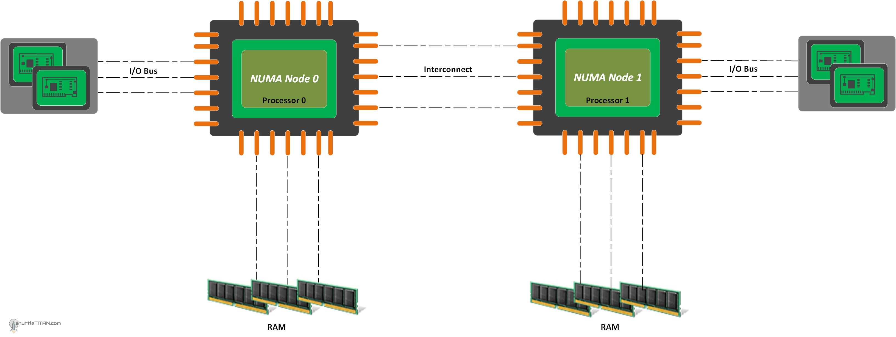
Архитектура с неравномерным доступом к памяти (NUMA), где задержки и пропускная способность памяти различаются, стала настолько распространённой, что воспринимается как стандарт. Почему у нас появились системы NUMA? Изначально была просто память, но с ростом скорости процессоров по сравнению с памятью она уже не могла выдавать данные достаточно быстро, и был добавлен кэш. Кэш должен был оставаться согласованным с основной памятью, работать на порядок быстрее, но при этом был существенно меньше по объёму. Он также должен был содержать метаинформацию о данных, чтобы знать, когда их нужно записать обратно. Если записи не требовалось, это улучшало производительность, поскольку такие алгоритмы — самые быстрые.
Позже объёмы памяти стали настолько велики (гигабайты и терабайты оперативной памяти), что маленького кэша уже не хватало для охвата всей доступной памяти. При работе с большими объёмами данных происходило «вытеснение» данных из кэша, и алгоритм начинал работать даже медленнее, чем при доступе к основной памяти. Появились кэши второго и последующих уровней, чтобы, с одной стороны, обеспечивать доступ к большому объёму оперативной памяти, а с другой — не быть слишком медленными и успевать «кормить» кэш первого уровня.
Сложность управления кэшами возросла ещё больше, когда ядер стало несколько, и у каждого был свой кэш. Данные из оперативной памяти должны были оставаться согласованными со всеми кэшами. До NUMA каждый процессор/ядро отправляли сообщение в общую шину при каждой операции чтения или записи, чтобы другие процессоры/ядра могли при необходимости обновить свой кэш.
Эта схема работала для 2–4 процессоров/ядер, но с ростом их числа время ожидания ответа от всех становилось сравнимым с одним тактом, а микрокод кэшей становился слишком сложным для масштабирования. Решением этой проблемы стало использование общего механизма на группу ядер, который отслеживает состояние кэша для всех ядер группы. Такая структура решает проблему согласованности кэша внутри группы, но сами группы уже нуждаются в синхронизации.
Недостатком такого подхода стало снижение производительности, когда одна группа ядер обращается к памяти, принадлежащей другой группе. В консолях и бытовых системах (до 64 ядер) дополнительно используется кольцевая шина, что добавляет задержку при передаче сообщений между группами при доступе к памяти.
Немного про отравление кэша и про когерентность кэшей тут.
SIMD (Single Instruction Multiple Data)
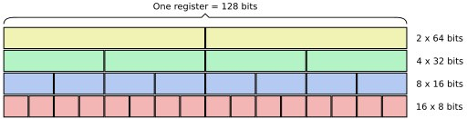
Технология SIMD, впервые введённая в x86 как MMX в 90-х годах, позволила выполнять одну инструкцию сразу над несколькими данными, что значительно ускоряет операции с массивами, векторные и графические вычисления. Например, AVX/AVX2/512 (Advanced Vector Extensions) и SSE (Streaming SIMD Extensions) — это более современные версии SIMD, которые активно используются в играх, наукоёмких приложениях, обработке изображений и видео. Эти инструкции позволяют производить вычисления над большими массивами данных, ускоряя операции с плавающими числами и целыми числами в графике, физике и машинном обучении.
Условный код вида:
for (int i = 0; i < n; ++i) {
sum += a[i];
}хорошо распознаётся компилятором и векторизуется. А вот что-то вроде такого уже вызывает проблемы, да и зачастую даже на простых примерах компилятор тоже пасует:
for (int i = 0; i < n; ++i) {
if (!a[i]) continue;
sum += a[i];
}Скорость и эффективность SIMD объясняется тем, что при обработке, скажем, четырёх чисел одновременно это не требует дополнительных тактов для обработки каждого числа отдельно. Вместо этого процессор выполняет операцию сразу над четырьмя (или даже восемью) числами. Такая оптимизация позволяет увеличить производительность в 2–4 раза на обычных задачах и на порядок — на специальных задачах, но в большинстве случаев мы получаем x1.5–x2 прирост на задачах и специального человека в команде, который это разруливает.
Out-of-Order Execution (Внеочередное выполнение)
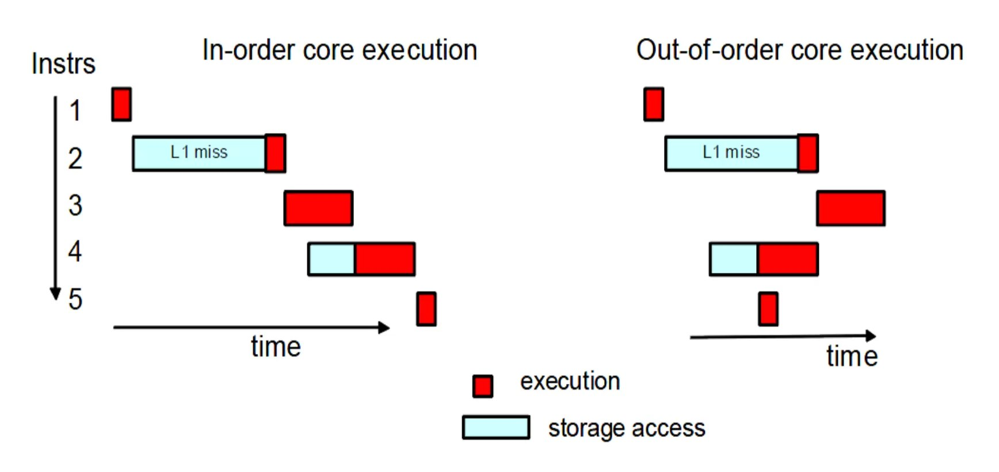
В 90-х годах также появился механизм внеочередного выполнения, который позволяет процессору «угадывать», какие инструкции можно выполнить, пока другие ожидают своих данных. Это позволяет процессору не простаивать, ожидая, пока данные загрузятся из памяти, а продолжать работу, выполняя другие операции, для которых данные уже доступны.
Современные процессоры могут управлять десятками таких «незавершённых» операций одновременно. Это помогает значительно улучшить производительность в ситуациях, где последовательные инструкции могут мешать друг другу, особенно в случае длинных вычислительных цепочек. В играх, где алгоритмы специально переделывают, чтобы снизить зависимость, например, физические взаимодействия и эффекты частиц, это может принести некоторый профит и снизить задержки.
Управление питанием
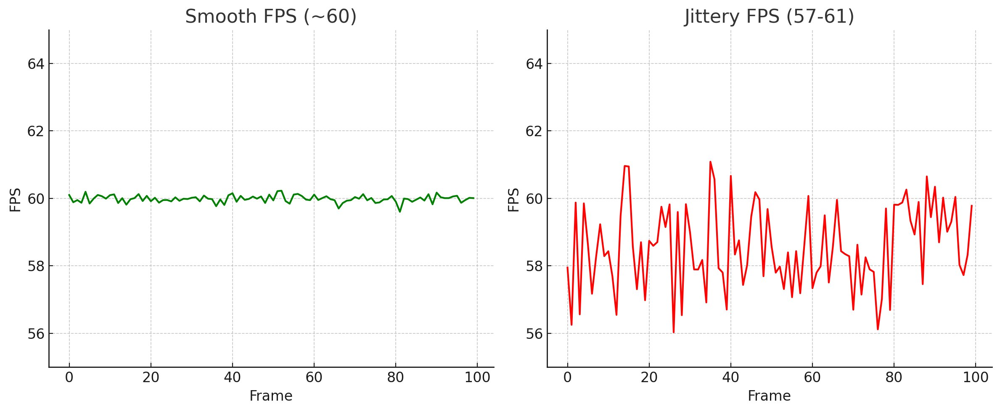
Картинка выше позволяет оценить, сколько мы теряем производительности на управлении питанием в ёмких вычислениях и необходимости «пробуждать» проц после простоя, — один из внутренних бенчмарков студии для оценки пригодности cpu.
Современные процессоры пришли к «пиковым» алгоритмам производительности и оснащены множеством функций управления питанием, которые уменьшают энергопотребление в различных сценариях. Большинству современных приложений требуется выйти на пик производительности на несколько секунд, выполнить задачу и затем перейти в режим минимальной частоты для экономии энергии. Это делает подход «ускорение до простоя» (выполнение задач как можно быстрее с последующим переходом процессора в режим простоя) наиболее эффективным. Однако для игр этот подход не работает: разработчики игр годами стремятся максимально загружать процессоры, удерживая их на высокой производительности как можно дольше. Это мешает процессорам уходить в режим энергосбережения, что критично для игр. Проблема в том, что выход на рабочие частоты занимает значительное время, что вызывает рывки фреймов и нестабильное время отклика. В некоторых случаях даже приходится придумывать код, который работает в фоне, чтобы предотвратить уход ядер в режим энергосбережения, когда основным потокам нечего делать. Это особенно заметно на последних поколениях энергоэффективных процессоров. В левой части — мобильный Ryzen 9-4900HS/RTX2060 на внутренних тестах с выключенной в биосе опцией управления питанием, справа он же с активным планом. Один и тот же лэптоп, но вот этот дребезг получается из-за постоянного гуляния частоты процессора, каждые 4–5 фреймов; N запусков бенчмарка, каждый длиной в пару секунд, запоминаем максимальное время фрейма на каждом запуске.
GPGPU
До середины 2000-х графические процессоры (GPU) были ограничены API, который предоставлял лишь базовый контроль над оборудованием. Однако, когда в системе есть фактически второй процессор со своей собственной памятью, часто не уступающей по параметрам основному, возникает вопрос: «почему он простаивает?». Так люди начали использовать видеокарты для более широкого круга задач, например, для задач линейной алгебры, которые прекрасно подходят для параллельных вычислений. Параллельная архитектура GPU могла обрабатывать крупные матрицы, например 512×512 и большего размера, с которыми обычный CPU, мягко говоря, справлялся очень плохо. Из интересного можно почитать статью Игоря Островского на эту тему.
Первоначально библиотеки использовали традиционные графические API, но позже Nvidia и ATI заметили эту тенденцию и выпустили расширения, которые предоставили нам доступ к большему количеству функций оборудования. На верхнем уровне GPU включает один или несколько потоковых многоядерных процессоров (SM). Каждый такой процессор обычно содержит несколько вычислительных блоков (ядер). В отличие от CPU, GPU не имеют ряда функций, таких как большие кэши или предсказание переходов, или они сильно урезаны по сравнению с CPU. Поэтому задачи, хорошо подходящие для GPU, обладают высокой степенью параллелизма и содержат данные, которые можно разделить между большим количеством потоков.
Память GPU делится на два основных типа: глобальную и разделяемую. Глобальная память — это GDDR, объём которой указан на коробке GPU и обычно составляет от 2 ГБ и выше, доступна всем потокам на всех SM и является самой медленной памятью на карте. Разделяемая память используется всеми потоками в одном SM. Она быстрее глобальной памяти, но недоступна для потоков в других SM. Обе категории памяти требуют строгих правил доступа: нарушение этих правил влечёт значительное снижение производительности. Чтобы достичь высокой пропускной способности, доступ к памяти должен быть правильно организован для параллельного использования потоками одной группы. Подобно тому, как CPU считывает данные из одной линии кэша, у GPU линия кэша рассчитана на обслуживание всех потоков в группе при правильном выравнивании. Производители стараются увеличить размер кэш-линии, чтобы обеспечить одновременный доступ как можно большему числу SM. Но это работает только в случае, если все потоки обращаются к одной кэш-линии. В худшем случае, когда каждый поток в группе обращается к разным кэш-линиям, для каждого потока требуется отдельное чтение, что снижает эффективную пропускную способность памяти, так как большая часть данных в кэш-линии остаётся неиспользованной.
Почему я отнёс это к CPU? Поскольку мы начали использовать GPU для решения общего круга задач, почему бы и не рассматривать их в этом контексте?
Виртуальная память
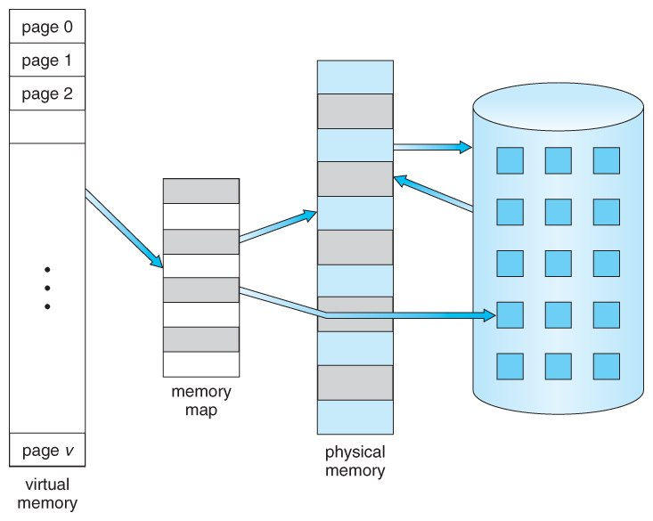
Это ещё одна из «новых» функций, о которой не приходится задумываться, если мы не занимаемся разработкой операционной системы. Виртуальная память значительно упрощает использование по сравнению с сегментированной памятью, но эта тема уже не актуальна, так что можно на этом остановиться. Виртуальная память использует как аппаратные, так и программные средства, чтобы компенсировать нехватку физической памяти, временно перенося данные из оперативной памяти (RAM) на диск. Отображение фрагментов памяти в файлы на диске позволяет компьютеру обрабатывать вторичную память так, как если бы она была основной памятью. Хорошая статья для ознакомления — здесь.
SMT / HT
Использование в основном прозрачно для программистов, но важно знать пару моментов. Типичное ускорение для включения HT на одном ядре составляет около 25% для программ общего пользования. Это улучшает общую пропускную способность, позволяя больше загружать ядро данными от двух потоков выполнения, но при этом каждый поток на ядре может потерять в производительности. Для игр, где важна высокая производительность одного потока, выгоднее отключить HT, чтобы сторонние приложения меньше лезли в кэш и мешали работе. Даже если мы прибьём поток к конкретному ядру, мы всё равно не сможем утилизировать более 80% времени ядра: даже при цифрах загрузки, близких к 75–80%, у нас будут происходить переключения на кадры других потоков. Для примера могу привести случай из жизни, когда у моделера игра просаживалась до 50 фпс просто если в фоне был включён Houdini, который был свёрнут и «ничего» не делал, но продолжал активно использовать первое ядро, на котором крутился основной поток игры; зависимость была на линейке 12700 от Intel. После выключения HT ситуация немного улучшилась до 55 fps, а в Pix'e было видно, что на первое ядро всё равно пролезали блоки выполнения Houdini. Стабильные 60 получались только при выключении 3D-пакета, хотя многое зависит от конкретной нагрузки и от железа, потому что на AMD такой зависимости не было.
Другим побочным эффектом усложнённости чипов стало то, что производительность стала менее предсказуемой, чем раньше, особенно на мобильных чипах. Хорошая статья от NASA о том, почему там будет хорошо, если 30% прироста, а не x2, как все надеются :)
BPU (Branch Prediction Unit)
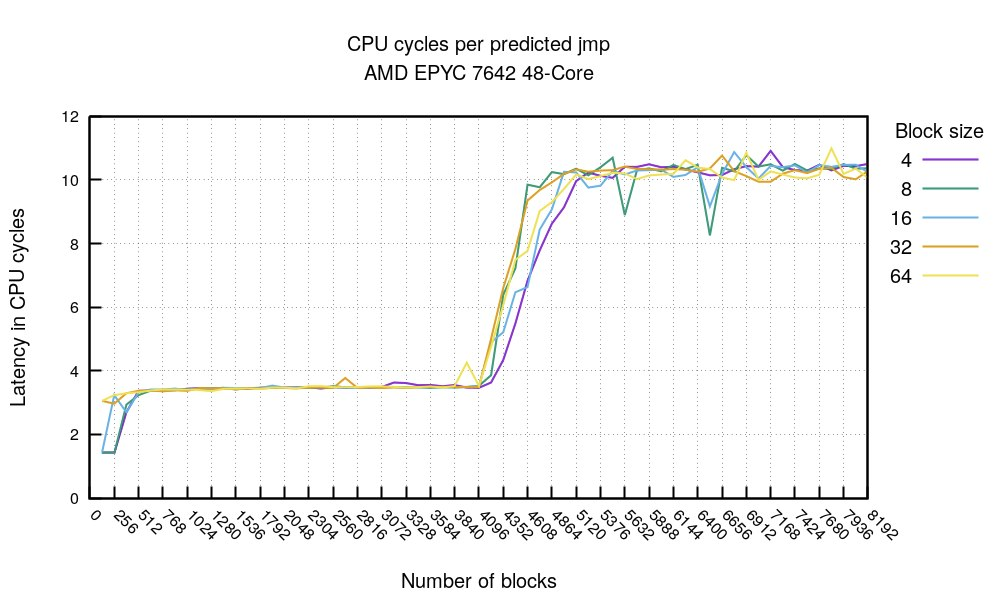
Деградация времени выполнения одного перехода при увеличении уровня вложенности if
Блок предсказания переходов — это отдельная часть процессора, минипроцессор со своей прошивкой, памятью, кэшами и т. д., который предсказывает выполнение условных переходов в потоке инструкций. В современных процессорах предсказание переходов стало критически важным для роста производительности, так как позволяет сократить простои в конвейере инструкций и более эффективно использовать его ресурсы. В последних поколениях процессоров Intel площадь блока BPU на кристалле может занимать до 15% ядра, а объём микрокода BPU сопоставим с объёмом всего остального микрокода. Однако создание больших и глубоких блоков BPU стало крайне сложной задачей, и поэтому блоки глубиной более 64 уровней вложенности практически не проектируют.
Сам BPU состоит из нескольких частей:
- Таблица предсказаний (Branch Prediction Table, BPT) — хранит историю предсказаний для различных инструкций переходов, записывая адрес инструкции и статус перехода (например, «выполнится» или «не выполнится»).
- Буфер истории переходов (Branch History Buffer, BHB) — сохраняет последовательность последних переходов для повышения точности предсказаний, учитывая поведение программы в прошлом для более точного предсказания текущих переходов.
- Кэш целевых адресов (Branch Target Buffer, BTB) — хранит целевые адреса переходов, позволяя быстрее осуществлять переход в нужную точку кода при успешном предсказании. BTB также помогает загрузить в кэш L1 данные, которые могут потребоваться в этой ветке.
- Кэш последних выполненных переходов (Last Recent Branch Buffer) — хранит последние N адресов переходов (обычно не более 64). Сначала поиск выполняется в этом быстром кэше; если ответ не найден, выполняется поиск по BPT.
Интересная статья по теме.
С первого дня моей работы в программировании опытные коллеги предупреждали, что ветвления замедляют выполнение кода и их следует избегать. На процессорах серии Intel 12700 штраф за неверное предсказание ветвления составляет 14 тактов. Частота неверных предсказаний зависит от сложности кода и общей глубины вложенности. По моим последним замерам на проектах (PS4/5), частота ошибок предсказаний была от 1% до 6%. Показатели выше 3% считаются значительными и могут быть сигналом к оптимизации кода.
Однако, если верное ветвление занимает всего 1 такт, то средняя стоимость ветвления составит:
- при 0.5% ошибок: 0.995 × 1 + 0.005 × 14 = 1.065 такта;
- при 4% ошибок: 0.96 × 1 + 0.04 × 14 = 1.52 такта.
После таких замеров на реальных проектах мы стали меньше придираться к наличию if, если они не усложняют чтение кода.
Исследуя материал для доклада по ветвлениям внутри студии, я пришёл к выводу, что данный штраф не так критичен, учитывая, что в среднем лишь 5% предсказаний ошибочны. Непредсказуемые ветвления — это минус, но большинство из них хорошо поддаются профилированию в горячих функциях, и их хорошо видно что в PIX'e, что в Razor'e. Оптимизировать алгоритм имеет смысл только там, где профилировщик выявляет проблемы. За последние двадцать лет процессоры стали более устойчивыми к неоптимизированному коду, а компиляторы научились его оптимизировать, так что оптимизация ветвлений разными костылями и хаками из конца 90-х уже не так актуальна и требуется в основном для максимального увеличения производительности уже на этапах пост-профилировки релиза.
Хорошая лекция по этой теме.
И ещё одно наблюдение о ветвлениях: современные процессоры (XBOX, PS4, PS5, почти все мобильные процы) игнорируют инструкции для предсказания ветвлений, но такие указания помогают компилятору лучше расположить код. Сам процессор полагается исключительно на BPU, а не на «подсказки» от программиста.
Спасибо, что дочитали! Если что забыл указать, пишите в комментах.
← Все статьи